How we merged two enterprise data platforms with zero data loss
Two Snowflake accounts, built up independently over several years by two different parts of the same company. Roughly 150 users between them. Around 170 roles, a dozen duplicate databases answering to slightly different names for what was mostly the same data. We merged them into one account, in a two-hour business-wide cutover window, and lost nothing. This is the mechanism — and the part that almost went wrong.
Start with the thing nobody tells you going in: Snowflake doesn't have a "merge two accounts" button. Organizations, Snowflake's own multi-account management layer, is explicitly a visibility and billing tool over accounts that stay separate — its own launch material frames the value as unified oversight, not consolidation. Snowflake's guidance for company mergers goes further than staying quiet on the topic: it actively recommends the opposite of what we did. Keep the accounts federated, connect them with secure data sharing, let each side keep operating independently. We wanted one account, not two politely connected ones. That meant repurposing a completely different part of the product: disaster recovery.

Two accounts in, one account out. The failover group carries the bulk of it; everything it can't touch gets a manual checklist and a deadline.
The tool that made this possible is failover groups,
not plain replication groups — the distinction matters, because only
a failover group can be promoted from secondary to primary.
Replication groups mirror data one-way, indefinitely, with no
cutover built in. A failover group is the same mechanism plus an
exit: ALTER FAILOVER GROUP <name> PRIMARY;, and
the target account stops being a replica and starts being the
account. It requires Business Critical Edition or higher, and
almost everything that matters replicates on schedule — databases,
schemas, roles, users, warehouses, network policies, tags.
The gotcha that could have turned this into an incident: replicate
into an account that already has its own users, roles, and
warehouses without protecting them first, and the incoming
replication overwrites them — silently, on schedule,
exactly as designed. Snowflake exposes
SYSTEM$LINK_ACCOUNT_OBJECTS_BY_NAME() for precisely
this situation, and skipping it is the difference between a merge
and a rewrite of the account you meant to keep.

The failover group's own documentation lists what it doesn't carry. External stages, pipes, dashboards, and Time Travel history all needed a separate, manual migration track — on a checklist, finished before the window opened, not during it.
Reconciling around 170 roles across two accounts is where most of the actual engineering time went, and Terraform did the job a spreadsheet couldn't: every role and every grant declared in code, diffed against both accounts before every apply, so a role that existed under one name in Account A and a near-identical name in Account B got resolved deliberately, not by whichever replicated last. Nothing shipped as a manual grant that wasn't reconciled back into code afterwards — the whole point of using infrastructure as code for identity is that "temporary" access has nowhere to hide.
The part that's easy to skip: Snowflake publishes no RPO or RTO guarantee for failover groups. "Zero data loss" is not a number the vendor gives you — it's a number you have to go and prove yourself. We did it the way Stripe describes doing it for their own zero-downtime data migrations: row-count reconciliation and checksums against both accounts before the window closed, not a trust exercise after the fact. If the counts didn't match, the cutover didn't happen — the go/no-go gate that made that credible is the subject of the next post.
If you're looking at two data platforms that need to become one, and want a second pair of eyes on the plan before you touch anything, that's exactly the kind of conversation worth having.